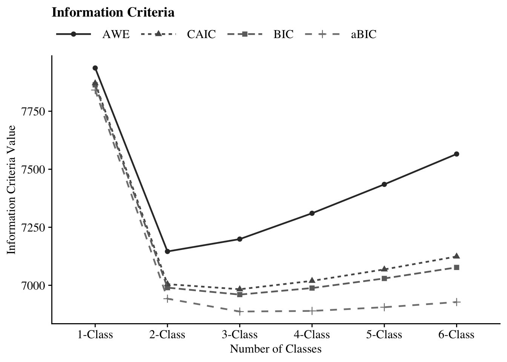
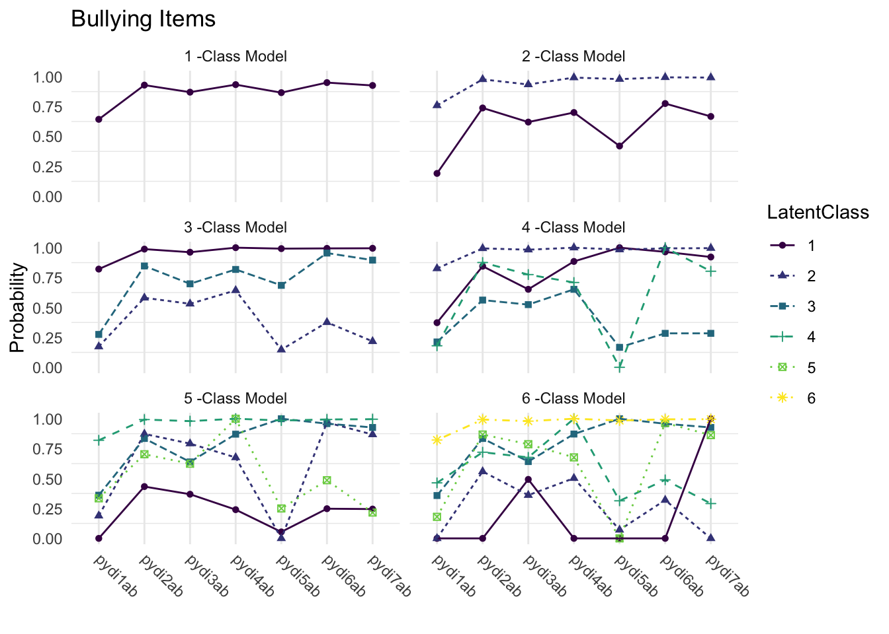
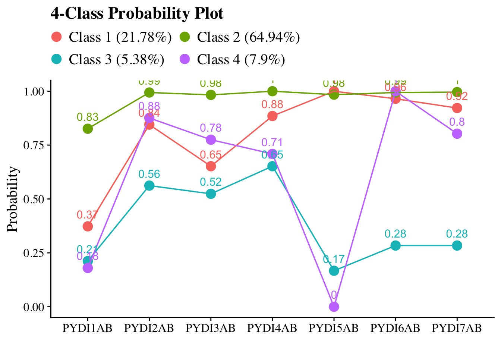
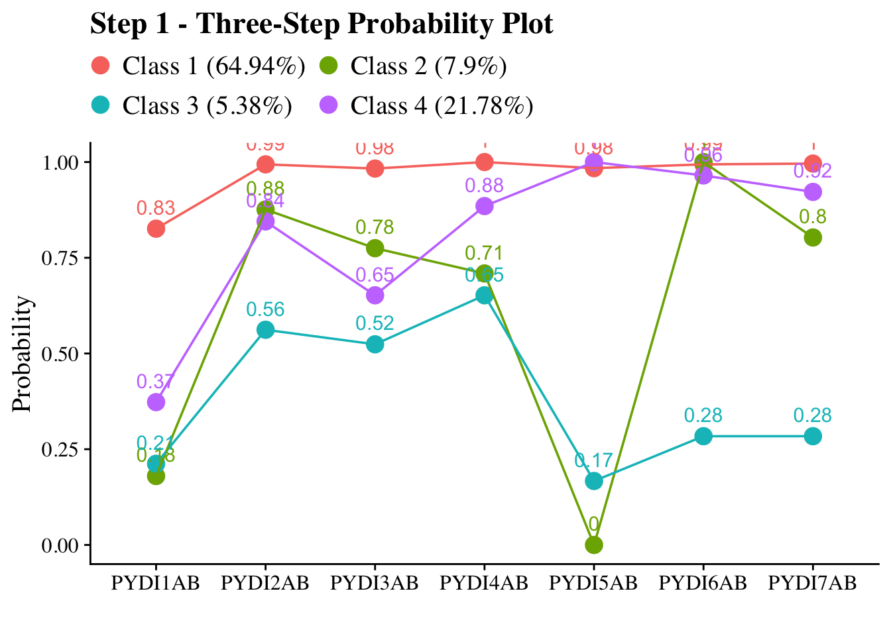

25 Ten Frequently Asked Questions (Nylund-Gibson 7 Choi, 2018)
25.1 Example: Positive Youth Development Inventory Analysis
- The original paper illustrated the modeling ideas described in this article using seven items (see Table 2) from the Positive Youth Development Inventory (PYDI) Contribution subscale (Arnold, Nott, & Meinhold, 2012) that were administered to 1629 college and university students.
- The PYDI measures behavioral, psychological, and social characteristics that are theorized to indicate positive youth development, and the Contribution Subscale specifically measures the degree to which youth express values and behaviors associated with channeling their positive psychosocial strengths to contribute meaningfully to their local community (Lerner et al., 2005).
- Citation: Nylund-Gibson, K., & Choi, A. Y. (2018). Ten frequently asked questions about latent class analysis. Translational Issues in Psychological Science, 4(4), 440–461.
25.2 Load packages
library(tidyverse)
library(haven)
library(glue)
library(MplusAutomation)
library(here)
library(janitor)
library(gt)
library(cowplot)
library(DiagrammeR)
library(webshot2)
library(stringr)
library(dplyr)
library(purrr)
library(readr)
library(flextable)
library(officer)
library(glue)
library(htmltools)25.3 Variable Description
- The original research question was to examine whether this construct of positive contribution comprised qualitatively distinct subtypes among college and university students, and to further examine whether such subtypes (if indeed were present) were meaningfully associated with a demographic predictor and a wellbeing-related outcome.
25.5 Descriptive Statistics
# Set up data to find proportions of binary indicators
ds <- df_qa %>%
pivot_longer(c(PYDI1Ab, PYDI2Ab, PYDI3Ab, PYDI4Ab, PYDI5Ab, PYDI6Ab, PYDI7Ab),
names_to = "variable")
# Create table of variables and counts, then find proportions and round to 3 decimal places
prop_df <- ds %>%
count(variable, value) %>%
group_by(variable) %>%
mutate(prop = n / sum(n)) %>%
ungroup() %>%
mutate(prop = round(prop, 3))
# Make it a gt() table
prop_table <- prop_df %>%
gt(groupname_col = "variable", rowname_col = "value") %>%
tab_stubhead(label = md("*Values*")) %>%
tab_header(
md(
"Variable Proportions"
)
) %>%
cols_label(
variable = md("*Variable*"),
value = md("*Value*"),
n = md("*N*"),
prop = md("*Proportion*")
)
prop_table| Variable Proportions | ||
| Values | N | Proportion |
|---|---|---|
| PYDI1Ab | ||
| 0 | 581 | 0.355 |
| 1 | 1048 | 0.640 |
| 9999 | 9 | 0.005 |
| PYDI2Ab | ||
| 0 | 116 | 0.071 |
| 1 | 1513 | 0.924 |
| 9999 | 9 | 0.005 |
| PYDI3Ab | ||
| 0 | 212 | 0.129 |
| 1 | 1417 | 0.865 |
| 9999 | 9 | 0.005 |
| PYDI4Ab | ||
| 0 | 109 | 0.067 |
| 1 | 1520 | 0.928 |
| 9999 | 9 | 0.005 |
| PYDI5Ab | ||
| 0 | 219 | 0.134 |
| 1 | 1410 | 0.861 |
| 9999 | 9 | 0.005 |
| PYDI6Ab | ||
| 0 | 82 | 0.050 |
| 1 | 1547 | 0.944 |
| 9999 | 9 | 0.005 |
| PYDI7Ab | ||
| 0 | 120 | 0.073 |
| 1 | 1509 | 0.921 |
| 9999 | 9 | 0.005 |
25.6 Enumeration
This code uses the mplusObject function in the MplusAutomation package and saves all model runs in the enum folder.
lca_6 <- lapply(1:6, function(k) {
lca_enum <- mplusObject(
TITLE = glue("{k}-Class"),
VARIABLE = glue(
"categorical = PYDI1Ab PYDI2Ab PYDI3Ab PYDI4Ab PYDI5Ab PYDI6Ab PYDI7Ab;
MISSING ARE ALL (9999);
usevar = PYDI1Ab PYDI2Ab PYDI3Ab PYDI4Ab PYDI5Ab PYDI6Ab PYDI7Ab;
classes = c({k}); "),
ANALYSIS =
"estimator = mlr;
type = mixture;
starts = 500 100;
processors = 10;",
OUTPUT = "sampstat residual tech1 tech11 tech14;",
PLOT =
"type = plot3;
series = PYDI1Ab PYDI2Ab PYDI3Ab PYDI4Ab PYDI5Ab PYDI6Ab PYDI7Ab(*);",
usevariables = colnames(df_qa),
rdata = df_qa)
lca_enum_fit <- mplusModeler(lca_enum,
dataout=glue(here("10faq", "enum", "lca10faq.dat")),
modelout=glue(here("10faq", "enum", "c{k}_lca10faq.inp")),
check=TRUE, run = TRUE, hashfilename = FALSE)
})25.6.1 Examine and Extract Mplus files
Check all models for:
- Warnings
- Errors
- Convergence and Loglikelihood Replication Information
source(here("functions", "extract_mplus_info.R"))
# Define the directory where all of the .out files are located.
output_dir <- here("10faq", "enum")
# Get all .out files
output_files <- list.files(output_dir, pattern = "\\.out$", full.names = TRUE)
# Process all .out files into one dataframe
final_data <- map_dfr(output_files, extract_mplus_info_extended)
# Extract Sample_Size from final_data
sample_size <- unique(final_data$Sample_Size)25.6.1.1 Examine Mplus Warnings
source(here("functions", "extract_warnings.R"))
warnings_table <- extract_warnings(final_data)
warnings_table| Model Warnings | ||
| Output File | # of Warnings | Warning Message(s) |
|---|---|---|
| c1_lca10faq.out | There are 4 warnings in the output file. | *** WARNING in OUTPUT command SAMPSTAT option is not available when all outcomes are censored, ordered categorical, unordered categorical (nominal), count or continuous-time survival variables. Request for SAMPSTAT is ignored. |
*** WARNING in OUTPUT command TECH11 option is not available for TYPE=MIXTURE with only one class. Request for TECH11 is ignored. |
||
*** WARNING in OUTPUT command TECH14 option is not available for TYPE=MIXTURE with only one class. Request for TECH14 is ignored. |
||
*** WARNING Data set contains cases with missing on all variables. These cases were not included in the analysis. Number of cases with missing on all variables: 9 |
||
| c2_lca10faq.out | There are 2 warnings in the output file. | *** WARNING in OUTPUT command SAMPSTAT option is not available when all outcomes are censored, ordered categorical, unordered categorical (nominal), count or continuous-time survival variables. Request for SAMPSTAT is ignored. |
*** WARNING Data set contains cases with missing on all variables. These cases were not included in the analysis. Number of cases with missing on all variables: 9 |
||
| c3_lca10faq.out | There are 2 warnings in the output file. | *** WARNING in OUTPUT command SAMPSTAT option is not available when all outcomes are censored, ordered categorical, unordered categorical (nominal), count or continuous-time survival variables. Request for SAMPSTAT is ignored. |
*** WARNING Data set contains cases with missing on all variables. These cases were not included in the analysis. Number of cases with missing on all variables: 9 |
||
| c4_lca10faq.out | There are 2 warnings in the output file. | *** WARNING in OUTPUT command SAMPSTAT option is not available when all outcomes are censored, ordered categorical, unordered categorical (nominal), count or continuous-time survival variables. Request for SAMPSTAT is ignored. |
*** WARNING Data set contains cases with missing on all variables. These cases were not included in the analysis. Number of cases with missing on all variables: 9 |
||
| c5_lca10faq.out | There are 2 warnings in the output file. | *** WARNING in OUTPUT command SAMPSTAT option is not available when all outcomes are censored, ordered categorical, unordered categorical (nominal), count or continuous-time survival variables. Request for SAMPSTAT is ignored. |
*** WARNING Data set contains cases with missing on all variables. These cases were not included in the analysis. Number of cases with missing on all variables: 9 |
||
| c6_lca10faq.out | There are 2 warnings in the output file. | *** WARNING in OUTPUT command SAMPSTAT option is not available when all outcomes are censored, ordered categorical, unordered categorical (nominal), count or continuous-time survival variables. Request for SAMPSTAT is ignored. |
*** WARNING Data set contains cases with missing on all variables. These cases were not included in the analysis. Number of cases with missing on all variables: 9 |
||
25.6.1.2 Examine Mplus Errors
source(here("functions", "error_visualization.R"))
# Process errors
error_table <- process_error_data(final_data)
error_table| Model Estimation Errors | ||
| Output File | Model Type | Error Message |
|---|---|---|
| c2_lca10faq.out | 2-Class | THE BEST LOGLIKELIHOOD VALUE HAS BEEN REPLICATED. RERUN WITH AT LEAST TWICE THE RANDOM STARTS TO CHECK THAT THE BEST LOGLIKELIHOOD IS STILL OBTAINED AND REPLICATED. |
| c3_lca10faq.out | 3-Class | THE BEST LOGLIKELIHOOD VALUE HAS BEEN REPLICATED. RERUN WITH AT LEAST TWICE THE RANDOM STARTS TO CHECK THAT THE BEST LOGLIKELIHOOD IS STILL OBTAINED AND REPLICATED. IN THE OPTIMIZATION, ONE OR MORE LOGIT THRESHOLDS APPROACHED EXTREME VALUES OF -15.000 AND 15.000 AND WERE FIXED TO STABILIZE MODEL ESTIMATION. THESE VALUES IMPLY PROBABILITIES OF 0 AND 1. IN THE MODEL RESULTS SECTION, THESE PARAMETERS HAVE 0 STANDARD ERRORS AND 999 IN THE Z-SCORE AND P-VALUE COLUMNS. |
| c4_lca10faq.out | 4-Class | THE BEST LOGLIKELIHOOD VALUE HAS BEEN REPLICATED. RERUN WITH AT LEAST TWICE THE RANDOM STARTS TO CHECK THAT THE BEST LOGLIKELIHOOD IS STILL OBTAINED AND REPLICATED. IN THE OPTIMIZATION, ONE OR MORE LOGIT THRESHOLDS APPROACHED EXTREME VALUES OF -15.000 AND 15.000 AND WERE FIXED TO STABILIZE MODEL ESTIMATION. THESE VALUES IMPLY PROBABILITIES OF 0 AND 1. IN THE MODEL RESULTS SECTION, THESE PARAMETERS HAVE 0 STANDARD ERRORS AND 999 IN THE Z-SCORE AND P-VALUE COLUMNS. |
| c5_lca10faq.out | 5-Class | THE BEST LOGLIKELIHOOD VALUE HAS BEEN REPLICATED. RERUN WITH AT LEAST TWICE THE RANDOM STARTS TO CHECK THAT THE BEST LOGLIKELIHOOD IS STILL OBTAINED AND REPLICATED. IN THE OPTIMIZATION, ONE OR MORE LOGIT THRESHOLDS APPROACHED EXTREME VALUES OF -15.000 AND 15.000 AND WERE FIXED TO STABILIZE MODEL ESTIMATION. THESE VALUES IMPLY PROBABILITIES OF 0 AND 1. IN THE MODEL RESULTS SECTION, THESE PARAMETERS HAVE 0 STANDARD ERRORS AND 999 IN THE Z-SCORE AND P-VALUE COLUMNS. |
| c6_lca10faq.out | 6-Class | THE BEST LOGLIKELIHOOD VALUE HAS BEEN REPLICATED. RERUN WITH AT LEAST TWICE THE RANDOM STARTS TO CHECK THAT THE BEST LOGLIKELIHOOD IS STILL OBTAINED AND REPLICATED. IN THE OPTIMIZATION, ONE OR MORE LOGIT THRESHOLDS APPROACHED EXTREME VALUES OF -15.000 AND 15.000 AND WERE FIXED TO STABILIZE MODEL ESTIMATION. THESE VALUES IMPLY PROBABILITIES OF 0 AND 1. IN THE MODEL RESULTS SECTION, THESE PARAMETERS HAVE 0 STANDARD ERRORS AND 999 IN THE Z-SCORE AND P-VALUE COLUMNS. |
25.6.1.3 Examine Convergence and Loglikelihood Replications
source(here("functions", "summary_table.R"))
# **Print Table with Superheader & Heatmap**
summary_table <- create_flextable(final_data, sample_size)
summary_tableN = 1629 |
Random Starts |
Final starting value sets converging |
LL Replication |
Smallest Class |
||||||
|---|---|---|---|---|---|---|---|---|---|---|
Model |
Best LL |
npar |
Initial |
Final |
f |
% |
f |
% |
f |
% |
1-Class |
-3,905.892 |
7 |
500 |
100 |
100 |
100% |
100 |
100.0% |
1,629 |
100.0% |
2-Class |
-3,439.483 |
15 |
500 |
100 |
100 |
100% |
100 |
100.0% |
331 |
20.3% |
3-Class |
-3,394.950 |
23 |
500 |
100 |
54 |
54% |
54 |
100.0% |
90 |
5.5% |
4-Class |
-3,379.436 |
31 |
500 |
100 |
51 |
51% |
41 |
80.4% |
88 |
5.4% |
5-Class |
-3,370.534 |
39 |
500 |
100 |
42 |
42% |
27 |
64.3% |
35 |
2.1% |
6-Class |
-3,364.745 |
47 |
500 |
100 |
38 |
38% |
2 |
5.3% |
6 |
0.4% |
25.6.1.4 Check for Loglikelihood Replication
Visualize and examine loglikelihood replication values for each ouptut file individually
# Load the function for separate plots
source(here("functions", "ll_replication_plots.R"))
# Generate individual log-likelihood replication tables
ll_replication_tables<- generate_ll_replication_plots(final_data)
ll_replication_tables| Log Likelihood Replications: 1-Class | ||
| Source File: c1_lca10faq.out | ||
| Log Likelihood | Replication Count | % of Valid Replications |
|---|---|---|
| −3,905.892 | 100.000 | 100.00% |
| Log Likelihood Replications: 2-Class | ||
| Source File: c2_lca10faq.out | ||
| Log Likelihood | Replication Count | % of Valid Replications |
|---|---|---|
| −3,439.483 | 100.000 | 100.00% |
| Log Likelihood Replications: 3-Class | ||
| Source File: c3_lca10faq.out | ||
| Log Likelihood | Replication Count | % of Valid Replications |
|---|---|---|
| −3,394.950 | 54.000 | 100.00% |
| Log Likelihood Replications: 4-Class | ||
| Source File: c4_lca10faq.out | ||
| Log Likelihood | Replication Count | % of Valid Replications |
|---|---|---|
| −3,379.436 | 41.000 | 80.39% |
| −3,381.888 | 1.000 | 1.96% |
| −3,384.030 | 9.000 | 17.65% |
| Log Likelihood Replications: 5-Class | ||
| Source File: c5_lca10faq.out | ||
| Log Likelihood | Replication Count | % of Valid Replications |
|---|---|---|
| −3,370.534 | 27.000 | 64.29% |
| −3,370.866 | 2.000 | 4.76% |
| −3,371.068 | 1.000 | 2.38% |
| −3,374.447 | 1.000 | 2.38% |
| −3,374.941 | 1.000 | 2.38% |
| −3,375.957 | 1.000 | 2.38% |
| −3,376.015 | 1.000 | 2.38% |
| −3,376.365 | 1.000 | 2.38% |
| −3,377.039 | 1.000 | 2.38% |
| −3,378.025 | 1.000 | 2.38% |
| −3,378.516 | 2.000 | 4.76% |
| −3,379.088 | 1.000 | 2.38% |
| −3,379.586 | 1.000 | 2.38% |
| −3,381.974 | 1.000 | 2.38% |
| Log Likelihood Replications: 6-Class | ||
| Source File: c6_lca10faq.out | ||
| Log Likelihood | Replication Count | % of Valid Replications |
|---|---|---|
| −3,364.745 | 2.000 | 5.26% |
| −3,365.674 | 7.000 | 18.42% |
| −3,365.675 | 4.000 | 10.53% |
| −3,366.002 | 1.000 | 2.63% |
| −3,366.027 | 1.000 | 2.63% |
| −3,366.135 | 1.000 | 2.63% |
| −3,366.310 | 1.000 | 2.63% |
| −3,366.311 | 1.000 | 2.63% |
| −3,366.511 | 1.000 | 2.63% |
| −3,366.940 | 1.000 | 2.63% |
| −3,367.162 | 1.000 | 2.63% |
| −3,367.244 | 1.000 | 2.63% |
| −3,367.673 | 1.000 | 2.63% |
| −3,367.811 | 1.000 | 2.63% |
| −3,368.103 | 1.000 | 2.63% |
| −3,368.160 | 1.000 | 2.63% |
| −3,368.316 | 1.000 | 2.63% |
| −3,368.325 | 1.000 | 2.63% |
| −3,368.369 | 2.000 | 5.26% |
| −3,368.448 | 5.000 | 13.16% |
| −3,368.477 | 1.000 | 2.63% |
| −3,369.880 | 1.000 | 2.63% |
| −3,369.961 | 1.000 | 2.63% |
Visualize and examine loglikelihood replication for each output file together
ll_replication_table_all <- source(here("functions", "ll_replication_processing.R"), local = TRUE)$value
ll_replication_table_all1-Class |
2-Class |
3-Class |
4-Class |
5-Class |
6-Class |
||||||||||||
|---|---|---|---|---|---|---|---|---|---|---|---|---|---|---|---|---|---|
LL |
N |
% |
LL |
N |
% |
LL |
N |
% |
LL |
N |
% |
LL |
N |
% |
LL |
N |
% |
-3905.892 |
100 |
100 |
-3439.483 |
100 |
100 |
-3394.95 |
54 |
100 |
-3379.436 |
41 |
80.4 |
-3370.534 |
27 |
64.3 |
-3,364.745 |
2 |
5.3 |
— |
— |
— |
— |
— |
— |
— |
— |
— |
-3381.888 |
1 |
2 |
-3370.866 |
2 |
4.8 |
-3,365.674 |
7 |
18.4 |
— |
— |
— |
— |
— |
— |
— |
— |
— |
-3384.03 |
9 |
17.6 |
-3371.068 |
1 |
2.4 |
-3,365.675 |
4 |
10.5 |
— |
— |
— |
— |
— |
— |
— |
— |
— |
— |
— |
— |
-3374.447 |
1 |
2.4 |
-3,366.002 |
1 |
2.6 |
— |
— |
— |
— |
— |
— |
— |
— |
— |
— |
— |
— |
-3374.941 |
1 |
2.4 |
-3,366.027 |
1 |
2.6 |
— |
— |
— |
— |
— |
— |
— |
— |
— |
— |
— |
— |
-3375.957 |
1 |
2.4 |
-3,366.135 |
1 |
2.6 |
— |
— |
— |
— |
— |
— |
— |
— |
— |
— |
— |
— |
-3376.015 |
1 |
2.4 |
-3,366.310 |
1 |
2.6 |
— |
— |
— |
— |
— |
— |
— |
— |
— |
— |
— |
— |
-3376.365 |
1 |
2.4 |
-3,366.311 |
1 |
2.6 |
— |
— |
— |
— |
— |
— |
— |
— |
— |
— |
— |
— |
-3377.039 |
1 |
2.4 |
-3,366.511 |
1 |
2.6 |
— |
— |
— |
— |
— |
— |
— |
— |
— |
— |
— |
— |
-3378.025 |
1 |
2.4 |
-3,366.940 |
1 |
2.6 |
— |
— |
— |
— |
— |
— |
— |
— |
— |
— |
— |
— |
-3378.516 |
2 |
4.8 |
-3,367.162 |
1 |
2.6 |
— |
— |
— |
— |
— |
— |
— |
— |
— |
— |
— |
— |
-3379.088 |
1 |
2.4 |
-3,367.244 |
1 |
2.6 |
— |
— |
— |
— |
— |
— |
— |
— |
— |
— |
— |
— |
-3379.586 |
1 |
2.4 |
-3,367.673 |
1 |
2.6 |
— |
— |
— |
— |
— |
— |
— |
— |
— |
— |
— |
— |
-3381.974 |
1 |
2.4 |
-3,367.811 |
1 |
2.6 |
— |
— |
— |
— |
— |
— |
— |
— |
— |
— |
— |
— |
— |
— |
— |
-3,368.103 |
1 |
2.6 |
— |
— |
— |
— |
— |
— |
— |
— |
— |
— |
— |
— |
— |
— |
— |
-3,368.160 |
1 |
2.6 |
— |
— |
— |
— |
— |
— |
— |
— |
— |
— |
— |
— |
— |
— |
— |
-3,368.316 |
1 |
2.6 |
— |
— |
— |
— |
— |
— |
— |
— |
— |
— |
— |
— |
— |
— |
— |
-3,368.325 |
1 |
2.6 |
— |
— |
— |
— |
— |
— |
— |
— |
— |
— |
— |
— |
— |
— |
— |
-3,368.369 |
2 |
5.3 |
— |
— |
— |
— |
— |
— |
— |
— |
— |
— |
— |
— |
— |
— |
— |
-3,368.448 |
5 |
13.2 |
— |
— |
— |
— |
— |
— |
— |
— |
— |
— |
— |
— |
— |
— |
— |
-3,368.477 |
1 |
2.6 |
— |
— |
— |
— |
— |
— |
— |
— |
— |
— |
— |
— |
— |
— |
— |
-3,369.880 |
1 |
2.6 |
— |
— |
— |
— |
— |
— |
— |
— |
— |
— |
— |
— |
— |
— |
— |
-3,369.961 |
1 |
2.6 |
25.6.2 Table of Fit
First, extract data
output_lca10faq <- readModels(here("10faq", "enum"), filefilter = "lca10faq", quiet = TRUE)
enum_extract <- LatexSummaryTable(output_lca10faq,
keepCols = c("Title","Parameters","LL","BIC","aBIC",
"BLRT_PValue","T11_VLMR_PValue","Observations"),
sortBy = "Title")
allFit <- enum_extract %>%
mutate(CAIC = -2 * LL + Parameters * (log(Observations) + 1)) %>%
mutate(AWE = -2 * LL + 2 * Parameters * (log(Observations) + 1.5)) %>%
mutate(SIC = -.5 * BIC) %>%
mutate(expSIC = exp(SIC - max(SIC))) %>%
mutate(BF = exp(SIC - lead(SIC))) %>%
mutate(cmPk = expSIC / sum(expSIC)) %>%
dplyr::select(1:5, 9:10, 6:7, 13, 14) %>%
arrange(Parameters)Add Convergence percentage, LL Replication percentage, and smallest class (%) Columns
allFit <- allFit %>%
mutate(Title = str_trim(Title)) %>%
left_join(
final_data %>%
select(Class_Model, Perc_Convergence, Replicated_LL_Perc,
Smallest_Class, Smallest_Class_Perc),
by = c("Title" = "Class_Model")
) %>%
mutate(Smallest_Class = coalesce(Smallest_Class,
final_data$Smallest_Class[match(Title, final_data$Class_Model)])) %>%
relocate(Perc_Convergence, Replicated_LL_Perc, .after = LL) %>%
mutate(Smallest_Class_Combined = paste0(Smallest_Class, "\u00A0(", Smallest_Class_Perc, "%)")) %>%
select(-Smallest_Class, -Smallest_Class_Perc)
allFit <- allFit %>%
select(
Title, Parameters, LL,
Perc_Convergence, Replicated_LL_Perc,
BIC, aBIC, CAIC, AWE,
T11_VLMR_PValue, BLRT_PValue,
Smallest_Class_Combined,
BF, cmPk
)Then, create table
fit_table1 <- allFit %>%
select(Title, Parameters, LL, Perc_Convergence, Replicated_LL_Perc,
BIC, aBIC, CAIC, AWE,
T11_VLMR_PValue, BLRT_PValue,
Smallest_Class_Combined
) %>%
gt() %>%
tab_header(title = md("**Model Fit Summary Table**")) %>%
tab_spanner(label = "Model Fit Indices", columns = c(BIC, aBIC, CAIC, AWE)) %>%
tab_spanner(label = "LRTs", columns = c(T11_VLMR_PValue, BLRT_PValue)) %>%
tab_spanner(label = md("Smallest\u00A0Class"), columns = c(Smallest_Class_Combined)) %>%
cols_label(
Title = "Classes",
Parameters = md("npar"),
LL = md("*LL*"),
Perc_Convergence = "% Converged",
Replicated_LL_Perc = "% Replicated",
BIC = "BIC",
aBIC = "aBIC",
CAIC = "CAIC",
AWE = "AWE",
T11_VLMR_PValue = "VLMR",
BLRT_PValue = "BLRT",
Smallest_Class_Combined = "n (%)"
) %>%
tab_footnote(
footnote = md(
"*Note.* Par = Parameters; *LL* = model log likelihood;
BIC = Bayesian information criterion;
aBIC = sample size adjusted BIC; CAIC = consistent Akaike information criterion;
AWE = approximate weight of evidence criterion;
BLRT = bootstrapped likelihood ratio test p-value;
VLMR = Vuong-Lo-Mendell-Rubin adjusted likelihood ratio test p-value;
*cmPk* = approximate correct model probability;
Smallest K = Number of cases in the smallest class (n (%));
LL Replicated = Whether the best log-likelihood was replicated."
),
locations = cells_title()
) %>%
tab_options(column_labels.font.weight = "bold") %>%
fmt_number(
columns = c(3, 6:9),
decimals = 2
) %>%
fmt(
columns = c(T11_VLMR_PValue, BLRT_PValue),
fns = function(x) ifelse(is.na(x), "—", ifelse(x < 0.001, "<.001", scales::number(x, accuracy = .01)))
) %>%
fmt_percent(
columns = c(Perc_Convergence, Replicated_LL_Perc),
decimals = 0,
scale_values = FALSE
) %>%
cols_align(align = "center", columns = everything()) %>%
tab_style(
style = list(cell_text(weight = "bold")),
locations = list(
cells_body(columns = BIC, row = BIC == min(BIC)),
cells_body(columns = aBIC, row = aBIC == min(aBIC)),
cells_body(columns = CAIC, row = CAIC == min(CAIC)),
cells_body(columns = AWE, row = AWE == min(AWE)),
cells_body(columns = T11_VLMR_PValue,
row = ifelse(T11_VLMR_PValue < .05 & lead(T11_VLMR_PValue) > .05, T11_VLMR_PValue < .05, NA)),
cells_body(columns = BLRT_PValue,
row = ifelse(BLRT_PValue < .05 & lead(BLRT_PValue) > .05, BLRT_PValue < .05, NA))
)
)Print Table
if (knitr::is_latex_output()) {
cat("\\includegraphics[width=\\textwidth]{figures/fit_table1.png}\n")
} else {
fit_table1
}| Model Fit Summary Table1 | |||||||||||
| Classes | npar | LL | % Converged | % Replicated |
Model Fit Indices
|
LRTs
|
Smallest Class
|
||||
|---|---|---|---|---|---|---|---|---|---|---|---|
| BIC | aBIC | CAIC | AWE | VLMR | BLRT | n (%) | |||||
| 1-Class | 7 | −3,905.89 | 100% | 100% | 7,863.56 | 7,841.32 | 7,870.55 | 7,936.32 | — | — | 1629 (100%) |
| 2-Class | 15 | −3,439.48 | 100% | 100% | 6,989.90 | 6,942.25 | 7,004.90 | 7,145.84 | <.001 | <.001 | 331 (20.3%) |
| 3-Class | 23 | −3,394.95 | 54% | 100% | 6,960.00 | 6,886.93 | 6,983.00 | 7,199.10 | <.001 | <.001 | 90 (5.5%) |
| 4-Class | 31 | −3,379.44 | 51% | 80% | 6,988.14 | 6,889.66 | 7,019.14 | 7,310.41 | 0.00 | <.001 | 88 (5.4%) |
| 5-Class | 39 | −3,370.53 | 42% | 64% | 7,029.50 | 6,905.60 | 7,068.50 | 7,434.93 | 0.43 | 0.19 | 35 (2.1%) |
| 6-Class | 47 | −3,364.74 | 38% | 5% | 7,077.09 | 6,927.78 | 7,124.09 | 7,565.69 | 0.47 | 0.67 | 6 (0.4%) |
| 1 Note. Par = Parameters; LL = model log likelihood; BIC = Bayesian information criterion; aBIC = sample size adjusted BIC; CAIC = consistent Akaike information criterion; AWE = approximate weight of evidence criterion; BLRT = bootstrapped likelihood ratio test p-value; VLMR = Vuong-Lo-Mendell-Rubin adjusted likelihood ratio test p-value; cmPk = approximate correct model probability; Smallest K = Number of cases in the smallest class (n (%)); LL Replicated = Whether the best log-likelihood was replicated. | |||||||||||
25.6.3 Information Criteria Plot
# Ensure CAIC exists and is numeric, if it exists
allFit <- allFit %>%
mutate(CAIC = as.numeric(CAIC)) # Ensure CAIC is numeric
# Ensure CAIC exists and is numeric, if it exists
allFit <- allFit %>%
mutate(CAIC = as.numeric(CAIC)) # Ensure CAIC is numeric
# Now, pivot the data
allFit %>%
dplyr::select(Title, BIC, aBIC, CAIC, AWE) %>%
pivot_longer(
cols = c(BIC, aBIC, CAIC, AWE), # Use these columns for pivoting
names_to = "Index", values_to = "ic_value"
) %>%
mutate(
Index = factor(Index, levels = c("AWE", "CAIC", "BIC", "aBIC")) # Ensure proper ordering of Index
) %>%
ggplot(aes(
x = Title,
y = ic_value,
color = Index,
shape = Index,
group = Index,
lty = Index
)) +
geom_point(size = 2.0) +
geom_line(size = .8) +
scale_x_discrete() +
scale_colour_grey(end = .5) +
theme_cowplot() +
labs(x = "Number of Classes", y = "Information Criteria Value", title = "Information Criteria") +
theme(
text = element_text(family = "serif", size = 12), # Change font to Arial
legend.text = element_text(family="serif", size=12),
legend.key.width = unit(3, "line"),
legend.title = element_blank(),
legend.position = "top"
)
25.6.4 Compare Class Solutions
Compare probability plots for \(K = 1:6\) class solutions
model_results <- data.frame()
for (i in 1:length(output_lca10faq)) {
temp <- output_lca10faq[[i]]$parameters$probability.scale %>%
mutate(model = paste(i,"-Class Model"))
model_results <- rbind(model_results, temp)
}
rm(temp)
compare_plot <-
model_results %>%
filter(category == 2) %>%
dplyr::select(est, model, LatentClass, param) %>%
mutate(param = as.factor(str_to_lower(param)))
compare_plot$param <- fct_inorder(compare_plot$param)
ggplot(
compare_plot,
aes(
x = param,
y = est,
color = LatentClass,
shape = LatentClass,
group = LatentClass,
lty = LatentClass
)
) +
geom_point() +
geom_line() +
scale_colour_viridis_d() +
facet_wrap( ~ model, ncol = 2) +
labs(title = "Bullying Items",
x = " ", y = "Probability") +
theme_minimal() +
theme(panel.grid.major.y = element_blank(),
axis.text.x = element_text(angle = -45, hjust = -.1)) 

Model Selection:
Fit indices did not converge on a single solution, and this is generally the rule rather than the exception in applied practice. The ICs and the cmP suggested a three-class solution, whereas the likelihood tests supported a four-class solution. Evaluating Figure 2, the most prominent “elbow” was at the two-class model, whereas the lowest point for the ICs was at the three-class model. The BF suggested that the three-, four-, and five-class solutions were plausible. Given that the BLRT specifically has been shown to be robust across a diversity of modeling conditions (Nylund, Asparouhov, & Muthén, 2007), we tentatively selected the four-class solution.
Model Interpretation:
The above figure illustrates the conditional item probabilities for the selected 4-class solution, where “conditional” again refers to the likelihood of endorsing each item as a function of class membership (e.g., the probabilities are “conditioned” on class). The model indicators are labeled on the x axis whereas the y axis presents the metric of the item probabilities (0 to 1). The four classes are defined by the crisscrossing lines, and their preliminary labels are listed at the bottom of Figure 3 with class prevalence (e.g., relative class sizes) in parentheses. We referred to the indicators in Table 2 in evaluating the substantive meaning of the joint patterns of item responses that emerged within each class. The first and largest class is characterized by high response probabilities for all indicators and were thus labeled the Holistic–Collaborative class. Youth in this class are likely to value social contribution overall and pursue pertinent activities in cooperation with others. The second class was labeled Altruistic–Low Selfefficacy and is likely to be comprised of youth who highly value social contribution yet do not believe in their own effectiveness for impactful engagement with their community. The third class was labeled Low Engagement given the characteristically low or ambivalent response probabilities for all model indicators. The fourth class was labeled Holistic–Independent given its similarity to the Holistic–Collaborative class apart from two indicators measuring interpersonal and community engagement. Youth in this class are likely to value social contribution but may prefer pursuing relevant activities in a more independent or introverted manner. Examining Figure 3, it is apparent that these two classes are quite homogenous (and thus not well-separated) in their item responses except on items 1 and 3, which may diminish the model classification statistics.
25.7 Including Auxilary Variables
25.7.1 Step 1 - Class Enumeration w/ Auxiliary Specification
This step is done after class enumeration (or after you have selected the best latent class model). In this example, the four class model was the best. Now, I am re-estimating the four-class model using optseed for efficiency. The difference here is the SAVEDATA command, where I can save the posterior probabilities and the modal class assignment for steps two and three.
step1 <- mplusObject(
TITLE = "Step 1 - Three-Step",
VARIABLE =
"categorical = PYDI1Ab PYDI2Ab PYDI3Ab PYDI4Ab PYDI5Ab PYDI6Ab PYDI7Ab;
usevar = PYDI1Ab PYDI2Ab PYDI3Ab PYDI4Ab PYDI5Ab PYDI6Ab PYDI7Ab;
MISSING ARE ALL (9999);
classes = c(4);
auxiliary = ! list all potential covariates and distals here
hispanic ! covariate
LifeSatA; ! distal ",
ANALYSIS =
"estimator = mlr;
type = mixture;
starts = 0;
optseed = 371246;",
SAVEDATA =
"File=3step_savedata.dat;
Save=cprob;",
OUTPUT = "residual tech11 tech14 svalues(2 4 3 1);",
PLOT =
"type = plot3;
series = PYDI1Ab PYDI2Ab PYDI3Ab PYDI4Ab PYDI5Ab PYDI6Ab PYDI7Ab(*);",
usevariables = colnames(df_qa),
rdata = df_qa)
step1_fit <- mplusModeler(step1,
dataout=here("10faq", "manual_3step", "Step1.dat"),
modelout=here("10faq", "manual_3step", "one.inp") ,
check=TRUE, run = TRUE, hashfilename = FALSE)
source(here("functions", "plot_lca.R"))
output_lsay <- readModels(here("10faq", "manual_3step","one.out"))
plot_lca(model_name = output_lsay)
Class 1: Holistic-Collaborative (65%) Class 2: Altruistic-Low Self-efficacy (8%) Class 3: Low Engagement (5%) Class 4: Holistic-Independent (22%)
25.7.2 Step 2 - Determine Measurement Error
Extract logits for the classification probabilities for the most likely latent class
logit_cprobs <- as.data.frame(output_lsay[["class_counts"]]
[["logitProbs.mostLikely"]])Extract saved dataset which is part of the mplusObject “step1_fit”
savedata <- as.data.frame(output_lsay[["savedata"]])Rename the column in savedata named “C” and change to “N”
25.7.3 Step 3 - Add Auxiliary Variables
Model with 1 covariate and 1 distal outcome
step3 <- mplusObject(
TITLE = "Step3 - 3step LSAY",
VARIABLE =
"nominal=N;
usevar = n;
classes = c(4);
usevar = hispanic LifeSatA;" ,
ANALYSIS =
"estimator = mlr;
type = mixture;
starts = 0;",
DEFINE =
"center hispanic (grandmean);",
MODEL =
glue(
" %OVERALL%
LifeSatA on hispanic; ! covariate as a predictor of the distal outcome
C on hispanic; ! covariate as predictor of C
%C#1%
[n#1@{logit_cprobs[1,1]}]; ! MUST EDIT if you do not have a 4-class model.
[n#2@{logit_cprobs[1,2]}];
[n#3@{logit_cprobs[1,3]}];
[LifeSatA](m1); ! conditional distal mean
LifeSatA; ! conditional distal variance (freely estimated)
%C#2%
[n#1@{logit_cprobs[2,1]}];
[n#2@{logit_cprobs[2,2]}];
[n#3@{logit_cprobs[2,3]}];
[LifeSatA](m2);
LifeSatA;
%C#3%
[n#1@{logit_cprobs[3,1]}];
[n#2@{logit_cprobs[3,2]}];
[n#3@{logit_cprobs[3,3]}];
[LifeSatA](m3);
LifeSatA;
%C#4%
[n#1@{logit_cprobs[4,1]}];
[n#2@{logit_cprobs[4,2]}];
[n#3@{logit_cprobs[4,3]}];
[LifeSatA](m4);
LifeSatA; "),
MODELCONSTRAINT =
"New (diff12 diff13 diff23
diff14 diff24 diff34);
diff12 = m1-m2; ! test pairwise distal mean differences
diff13 = m1-m3;
diff23 = m2-m3;
diff14 = m1-m4;
diff24 = m2-m4;
diff34 = m3-m4;",
MODELTEST = " ! omnibus test of distal means
m1=m2;
m2=m3;
m3=m4;",
usevariables = colnames(savedata),
rdata = savedata)
step3_fit <- mplusModeler(step3,
dataout=here("10faq", "manual_3step", "Step3.dat"),
modelout=here("10faq", "manual_3step", "three_starts.inp"),
check=TRUE, run = TRUE, hashfilename = FALSE)25.7.3.1 Wald Test Table
modelParams <- readModels(here("10faq", "manual_3step", "three_starts.out"))
# Extract information as data frame
wald <- as.data.frame(modelParams[["summaries"]]) %>%
dplyr::select(WaldChiSq_Value:WaldChiSq_PValue) %>%
mutate(WaldChiSq_DF = paste0("(", WaldChiSq_DF, ")")) %>%
unite(wald_test, WaldChiSq_Value, WaldChiSq_DF, sep = " ") %>%
rename(pval = WaldChiSq_PValue) %>%
mutate(pval = ifelse(pval<0.001, paste0("<.001*"),
ifelse(pval<0.05, paste0(scales::number(pval, accuracy = .001), "*"),
scales::number(pval, accuracy = .001))))
# Create table
wald_table <- wald %>%
gt() %>%
tab_header(
title = "Wald Test of Paramter Constraints (Math)") %>%
cols_label(
wald_test = md("Wald Test (*df*)"),
pval = md("*p*-value")) %>%
cols_align(align = "center") %>%
opt_align_table_header(align = "left") %>%
gt::tab_options(table.font.names = "serif")
wald_table| Wald Test of Paramter Constraints (Math) | |
| Wald Test (df) | p-value |
|---|---|
| 442.089 (3) | <.001* |
25.7.3.2 Table of Distal Outcome Differences
# Extract information as data frame
diff <- as.data.frame(modelParams[["parameters"]][["unstandardized"]]) %>%
filter(grepl("DIFF", param)) %>%
dplyr::select(param:pval) %>%
mutate(se = paste0("(", format(round(se,2), nsmall =2), ")")) %>%
unite(estimate, est, se, sep = " ") %>%
mutate(param = str_remove(param, "DIFF"),
param = as.numeric(param)) %>%
separate(param, into = paste0("Group", 1:2), sep = 1) %>%
mutate(class = paste0("Class ", Group1, " vs ", Group2)) %>%
select(class, estimate, pval) %>%
mutate(pval = ifelse(pval<0.001, paste0("<.001*"),
ifelse(pval<0.05, paste0(scales::number(pval, accuracy = .001), "*"),
scales::number(pval, accuracy = .001))))
# Create table
diff %>%
gt() %>%
tab_header(
title = "Distal Outcome Differences") %>%
cols_label(
class = "Class",
estimate = md("Mean (*se*)"),
pval = md("*p*-value")) %>%
sub_missing(1:3,
missing_text = "") %>%
cols_align(align = "center") %>%
opt_align_table_header(align = "left") %>%
gt::tab_options(table.font.names = "serif")| Distal Outcome Differences | ||
| Class | Mean (se) | p-value |
|---|---|---|
| Class 1 vs 2 | 20.613 (2.37) | <.001* |
| Class 1 vs 3 | 23.645 (3.69) | <.001* |
| Class 2 vs 3 | 3.032 (4.89) | 0.536 |
| Class 1 vs 4 | 22.07 (1.32) | <.001* |
| Class 2 vs 4 | 1.457 (2.70) | 0.590 |
| Class 3 vs 4 | -1.575 (3.95) | 0.690 |
25.7.3.3 Covariate Relations
# Extract information as data frame
cov <- as.data.frame(modelParams[["parameters"]][["unstandardized"]]) %>%
filter(str_detect(paramHeader, "^C#\\d+\\.ON$")) %>%
mutate(param = str_replace(param, "HISPANIC", "Hispanic")) %>%
mutate(est = format(round(est, 3), nsmall = 3),
se = round(se, 2),
pval = round(pval, 3)) %>%
mutate(latent_class = str_replace(paramHeader, "^C#(\\d+)\\.ON$", "Class \\1")) %>%
dplyr::select(param, est, se, pval, latent_class) %>%
mutate(se = paste0("(", format(round(se,2), nsmall =2), ")")) %>%
unite(logit, est, se, sep = " ") %>%
dplyr::select(param, logit, pval, latent_class) %>%
mutate(pval = ifelse(pval<0.001, paste0("<.001*"),
ifelse(pval<0.05, paste0(scales::number(pval, accuracy = .001), "*"),
scales::number(pval, accuracy = .001))))
or <- as.data.frame(modelParams[["parameters"]][["odds"]]) %>%
filter(str_detect(paramHeader, "^C#\\d+\\.ON$")) %>%
mutate(param = str_replace(param, "HISPANIC", "Hispanic")) %>%
mutate(est = format(round(est, 3), nsmall = 3)) %>%
mutate(latent_class = str_replace(paramHeader, "^C#(\\d+)\\.ON$", "Class \\1")) %>%
mutate(CI = paste0("[", format(round(lower_2.5ci, 3), nsmall = 3), ", ", format(round(upper_2.5ci, 3), nsmall = 3), "]")) %>%
dplyr::select(param, est, CI, latent_class) %>%
rename(or = est)
combined <- or %>%
full_join(cov) %>%
dplyr::select(param, latent_class, logit, pval, or, CI)
# Create table
combined %>%
gt(groupname_col = "latent_class", rowname_col = "param") %>%
tab_header(
title = "Predictors of Class Membership") %>%
cols_label(
logit = md("Logit (*se*)"),
or = md("Odds Ratio"),
CI = md("95% CI"),
pval = md("*p*-value")) %>%
sub_missing(1:3,
missing_text = "") %>%
sub_values(values = c("999.000"), replacement = "-") %>%
cols_align(align = "center") %>%
opt_align_table_header(align = "left") %>%
gt::tab_options(table.font.names = "serif") %>%
tab_footnote(
footnote = "Reference Class: 4",
locations = cells_title(groups = "title")
)| Predictors of Class Membership1 | ||||
| Logit (se) | p-value | Odds Ratio | 95% CI | |
|---|---|---|---|---|
| Class 1 | ||||
| Hispanic | 0.485 (0.18) | 0.009* | 1.624 | [1.130, 2.332] |
| Class 2 | ||||
| Hispanic | -0.513 (0.33) | 0.120 | 0.599 | [0.314, 1.144] |
| Class 3 | ||||
| Hispanic | -0.104 (0.36) | 0.770 | 0.901 | [0.447, 1.815] |
| 1 Reference Class: 4 | ||||
25.7.3.4 Distal Outcome Regressed on Covariate
donx <- as.data.frame(modelParams[["parameters"]][["unstandardized"]]) %>%
filter(param %in% c("HISPANIC")) %>%
mutate(param = str_replace(param, "HISPANIC", "Hispanic")) %>%
mutate(LatentClass = sub("^","Class ", LatentClass)) %>%
dplyr::select(!paramHeader) %>%
mutate(se = paste0("(", format(round(se,2), nsmall =2), ")")) %>%
unite(estimate, est, se, sep = " ") %>%
dplyr::select(param, estimate, pval) %>%
distinct(param, .keep_all=TRUE) %>%
mutate(pval = ifelse(pval<0.001, paste0("<.001*"),
ifelse(pval<0.05, paste0(scales::number(pval, accuracy = .001), "*"),
scales::number(pval, accuracy = .001))))
# Create table
donx %>%
gt(groupname_col = "LatentClass", rowname_col = "param") %>%
tab_header(
title = "Race (Hispanic) Predicting Life Satisfaction") %>%
cols_label(
estimate = md("Estimate (*se*)"),
pval = md("*p*-value")) %>%
sub_missing(1:3,
missing_text = "") %>%
sub_values(values = c("999.000"), replacement = "-") %>%
cols_align(align = "center") %>%
opt_align_table_header(align = "left") %>%
gt::tab_options(table.font.names = "serif")| Race (Hispanic) Predicting Life Satisfaction | ||
| Estimate (se) | p-value | |
|---|---|---|
| Hispanic | 0.365 (0.72) | 0.614 |
Following the three-step procedure, the logit values of the classification probabilities for the four-class solution for the first step were copied to be used in the third step. We used these values in a second set of analyses to fix the measurement parameters of the latent classes, and the auxiliary variables relations were estimated thereafter (see Appendix B). We used multinomial logistic regression to evaluate whether the relative proportions of Hispanic and non-Hispanic youth were equal across the four classes, and the results are reported in Table 5. Notably, Hispanic youth (versus nonHispanic) were more likely to be in the Holistic–Collaborative class compared with both the Altruistic–Low Self-efficacy class (OR 2.71, p .001) and the Holistic Independent class (OR 1.62, p .009). No other covariate-class relations were statistically significant. Simultaneously, we estimated classspecific means of life satisfaction for each of the four classes. For the interpretation of distal outcomes, we centered the covariate such that the distal outcome mean differences across the latent classes accounted for the relative proportion of Hispanic versus non-Hispanic youth in the entire sample. Pairwise Wald tests revealed that life satisfaction in the Holistic-Collaborative class was significantly higher compared to each of the other three classes. No other distal mean comparisons were statistically significant.
25.8 References
Arnold, M. E., Nott, B. D., & Meinhold, J. L. (2012). The Positive Youth Development Inventory full version. Corvallis: Oregon State University.
Lerner, R. M., Lerner, J. V., Almerigi, J. B., Theokas, C., Phelps, E., Gestsdottir, S., . . . von Eye, A. (2005). Positive youth development, participation in community youth development programs, and community contributions of fifth-grade adolescents: Findings from the first wave of the 4-H Study of Positive Youth Development. The Journal of Early Adolescence, 25, 17–71. http://dx.doi .org/10.1177/0272431604272461
Nylund, K. L., Asparouhov, T., & Muthén, B. O. (2007). Deciding on the number of classes in latent class analysis and growth mixture modeling: A Monte Carlo simulation study. Structural Equation Modeling, 14, 535–569. http://dx.doi.org/10.1080/ 10705510701575396